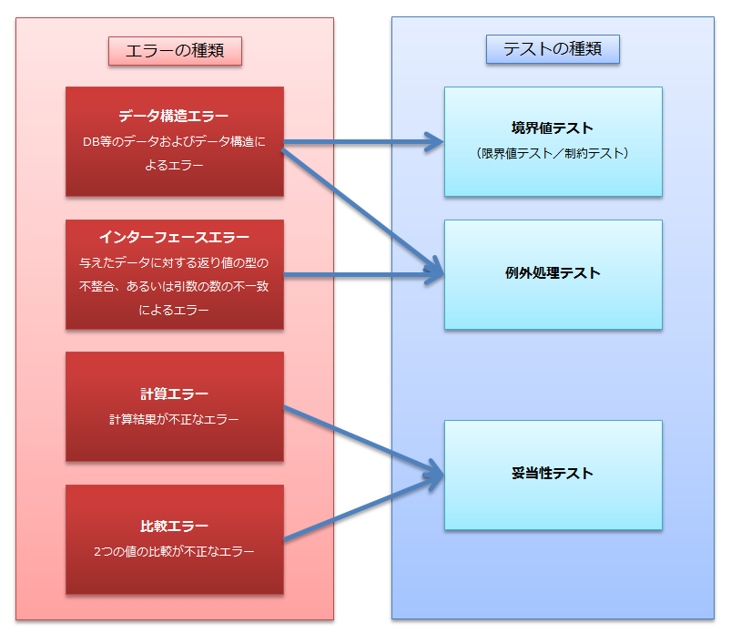

単体テストとは
単体テストとは
前章でも書きましたが、テストの中で一番初めに行うのが単体テストです。
それぞれのクラスやメソッドが仕様通りの機能をしているかどうかをチェックするのがその目的であり、
全体としての動作までは考えず、一つ一つのクラスや一つ一つの画面の動きをチェックしていきます。
チェックの仕方には、大きく分けてホワイトボックステストとブラックボックステストの二つがあります。
ホワイトボックステストとはプログラムの内部構造をチェックしていくテストであり、
ブラックボックステストとはプログラムの機能をチェックしていくテストです。
ホワイトボックステスト
システム内部の構造を理解した上でそれら一つ一つが意図した通りに動作しているかを確認するプログラムのテスト方法です。
「命令網羅」「判定条件網羅」「条件網羅」「複数条件網羅」「経路組み合わせ網羅」などの方式があります。
基本的にはプログラム内の全ての命令、全てのルーチンが最低一回は実行され、検証されるようになっています。
つまり、プログラムの全ての部分が、プログラム記述者の意図通りに動作していることを
確認するテストであり、システムの機能よりも内部構造の整合性を重視したテストとも言えます。
網羅的なテストであるためほとんど起こることのない事態に対しても動作確認できるのが利点ですが、
あくまでプログラム記述者の意図との整合性を確認するだけなので、
記述者自身に誤解があった場合は対処できないという欠点も持ちます。
ホワイトボックス例題
例えば、次のようなプログラムがあったとします。
1: int abs(int x) {
2: if (x < 0) {
3: x = -x;
4: }
5: return x;
6: }
・命令網羅
命令網羅基準を用いてテストを行う場合は、すべての命令を実行すればＯＫです。
上記のabs関数では、x = -1 を用いてテストすれば命令網羅基準に従ってテストできたことになります。
・ 分岐網羅
分岐網羅基準を用いてテストを行う場合は、すべての分岐において、すべての分岐の方向を実行すればOKです。
上記のabs関数では、x = 1 と x = -1 を用いてそれぞれテストすれば、分岐網羅基準にしたがってテストできたことにります。
ブラックボックステスト
これに対して、プログラムの内部構造とは関係なしに、外部から見て仕様書通りの機能を
持っているのか確認するテストを「ブラックボックステスト」と言います。
システムの内部構造とは無関係に、外部から見た機能を検証するプログラムのテスト方法です。
入力と出力だけに着目し、様々な入力に対して仕様書通りの出力が得られるかどうかを確認します。
その間、システム内部でどういった処理が行われているかは一切問題としません。
限界値分析や同値分割などの方式があり、仕様と実際のプログラムとの差を調べることができますが、
限定された状態でのみ起こるバグなどを完全に取り除くのは難しいとされます。
ブラックボックステスト例題
例えば、次のような仕様があったとします。
入力: 時刻 (0:00-23:59)
出力: 10:00≦入力≦20:00であれば通常料金、それ以外であれば割増料金
・同値分割
それぞれの範囲から代表的な値を入力として選びテストを行うので、入力例としては、 8:00、12:00があげられます。
・限界値分析
入力の範囲を想定される出力ごとに分割し、それぞれの範囲の境界を入力として選びテストを行う。
入力例として、9:59、10:00、20:00、20:01 があげられます。
上記の例を見比べてみると、ホワイトボックステストを行っていれば、
ブラックボックステストもすべて網羅しているのではないかと考えるかもしれませんが、両者は見方がまったく違うものです。
ホワイトボックステストは、ソースの中身をみてすべてを網羅するテストであるのに対して、ブラックボックステストは、
中身を隠した状態で、入出力のみに絞って実施するテストになります。
エラーの種類とテストの種類
ホワイトボックステスト、ブラックボックステストを説明しましたので、
今度は、単体テストにおいての、エラーの種類とテストの種類をみていきます。
エラーの種類とテストの種類を図に表すと下記のようになります。

図の右側を見るとわかるように、単体テストでは、
「境界値テスト」「例外処理テスト」「妥当性テスト」の３つを行えばよいことがわかります。
では、具体的にソースコードを使った例題を通して、「境界値テスト」がどのようなものであるかを見てみましょう。
ソースコードは、実際の実装クラス（変換メソッド）とそれをテストするクラスに分かれています。
下記のテストクラスは、JUnit を使って記述されています。
JUnit については、この後学習しますので、今の段階では「境界値テスト」がどのようなものであるかにだけ
主眼をおいて、雰囲気を掴むようにしてください。
実装クラス
実装クラスは、文字列をint型数値に変換するメソッドをもっています。
例えば、文字列 "１" を引数にとって convert メソッドを呼ぶと戻り値として int 型の "1" が返ってきます。
//実装クラス
//文字列をint型数値に変換するメソッド
public class Conversion {
// 変換メソッド
public int convert(String convertBefore) {
int convertAfter = Integer.parseInt(convertBefore);
return convertAfter;
}
}
テストクラス
テストクラスは、実装クラスの convert メソッドをテストするテストケースを書いていきます。
仕様に特段の範囲設定がなされていなければ、下記のようになります。
下記の例では「境界値テスト」を "制約テスト" と定めています。
これは、int 型の範囲が "2147483647" から "-2147483647" という理由で "制約テスト" と命名しています。
//テストクラス
import junit.framework.TestCase;
import kensyu.Conversion;
public class ConversionTest extends TestCase {
Conversion con;
protected void setUp() throws Exception {
super.setUp();
con = new Conversion();
}
protected void tearDown() throws Exception {
super.tearDown();
}
//境界値テスト【制約テスト（限界値テストがある場合は不要）】
public void testConvert_BigRestrictionWithNormalWidth() {
assertEquals(2147483647, con.convert("2147483647"));
}
//境界値テスト【制約テスト（限界値テストがある場合は不要）】
public void testConvert_SmallRestrictionWithNormalWidth() {
assertEquals(-2147483647, con.convert("-2147483647"));
}
//妥当性テスト
public void testConvert_AppropriateWithNormalWidth() {
assertEquals(7, con.convert("7"));
}
//例外テスト
public void testConvertCharacterExceptionWithNormalWidth() {
try{
con.convert("A");
fail();
}catch(NumberFormatException e){
// テスト成功
}
}
}
また、設計上の仕様として、convert メソッドは、３～１０の文字を引数に取るという決まりがあれば、
下記のようになります。
今度は、「境界値テスト」を "限界値テスト" と定めています。
これは、設計の範囲が、"３" から "１０" という理由で "限界値テスト" と命名しています。
//テストクラス
import junit.framework.TestCase;
import kensyu.Conversion;
public class ConversionTest extends TestCase {
Conversion con;
protected void setUp() throws Exception {
super.setUp();
con = new Conversion();
}
protected void tearDown() throws Exception {
super.tearDown();
}
//境界値テスト【限界値テスト（制約テストがある場合は不要）】
public void testConvert_BigLimitWithNormalWidth() {
assertEquals(10, con.convert("10"));
}
//境界値テスト【限界値テスト（制約テストがある場合は不要）】
public void testConvert_SmallLimitWithNormalWidth() {
assertEquals(3, con.convert("3"));
}
//妥当性テスト
public void testConvert_AppropriateWithNormalWidth() {
assertEquals(7, con.convert("7"));
}
//例外テスト
public void testConvertCharacterExceptionWithNormalWidth() {
try{
con.convert("A");
fail();
}catch(NumberFormatException e){
// テスト成功
}
}
}
上記の例で「境界値テスト」の部分を「限界値テスト」もしくは「制約テスト」と記載している理由としては
境界というものが大きく分けて２種類定義できるからです。
今回は、言語仕様などのシステム的（制約的）に存在する境界を「制約テスト」、
アプリケーションの仕様上存在する境界を「限界値テスト」と定義しました。
どちらが必要になってくるのかは仕様次第ですので、ケースバイケースで
どちちらか一方が必要になると覚えておいてください。
では、次に単体テストで使用される JUnit というツールの使い方を学んでいきましょう。
©日本インサイトテクノロジー株式会社